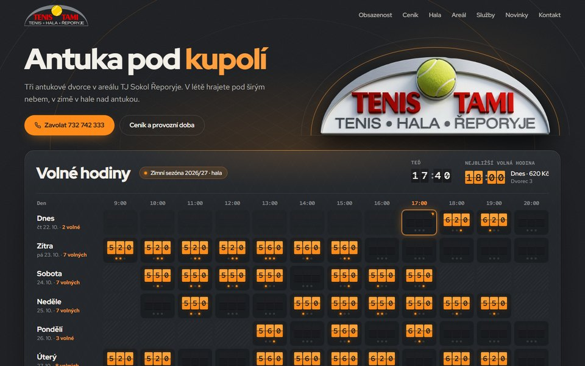
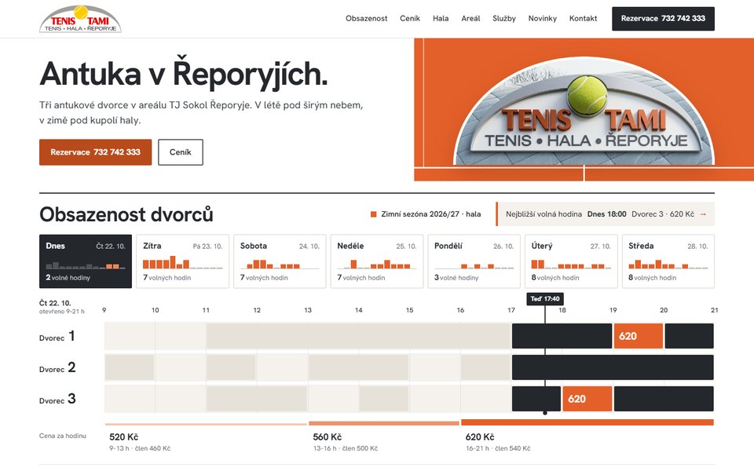

Dva návrhy úvodní stránky
01

Antracit
Tmavá · tabule volných hodin
Noční a sebevědomá. Odklápěcí tabule jako na letišti ukazuje celý týden: každá volná hodina se překlopí na svou cenu a počet volných dvorců.
Otevřít návrh
02

Antuka
Světlá moderní · den na dvorcích
Čistá a přesná jako čáry na antuce. Časová osa dne pro všechny tři dvorce s cenovou páskou: na první pohled je vidět volno i cena každé hodiny.
Otevřít návrh
Společné pro oba návrhy
- Obsazenost a ceny na celý týden přímo na úvodní stránce, klik na volnou hodinu nabídne zavolání.
- Ceník zima i léto včetně cen pro členy klubu a permanentek, provozní doba obou sezón.
- Klubové logo v klubové červené a jeho 3D cedule s míčkem, který se otáčí.
- Hala, areál a zázemí na skutečných fotkách, služby, novinky a kontakt s odkazy na Mapy.cz a Google Maps.
- Funguje na počítači, tabletu i mobilu.
Co ještě potřebujeme ověřit
- Zimní ceník: web uvádí 520 / 560 / 620 Kč (víkend 550 Kč), rezervační systém dnes ukazuje 490 / 540 / 600 Kč (víkend 520 Kč).
- Sobota v zimě: provozní doba 10–18 h, ceník uvádí 10–20 h.
- E-mail: tenistami-reporyje@seznam.cz, nebo jiras.tami@seznam.cz?
- Obsazenost je v návrzích ukázková. Po výběru návrhu ji napojíme na rezervační systém.